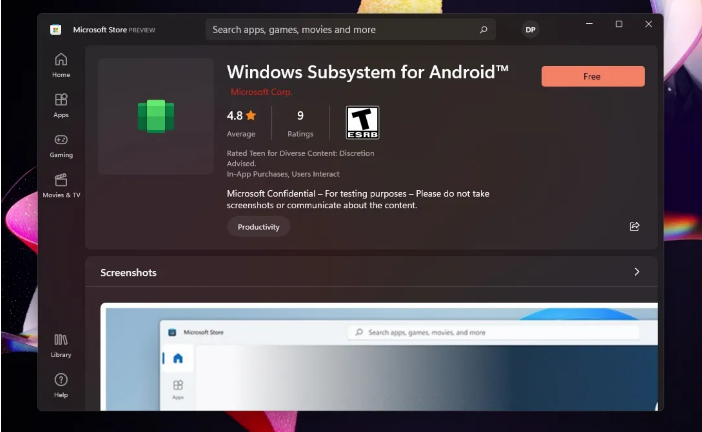

Dios, que caracteristicas más unicas, pero ¿qué aplicaciones vienen?
Estas son las aplicaciones incluidas en Windows 11 que puedes usar gratis. Son programas
que en su mayoría estaban en Windows 10 pero que vienen renovadas con nuevas
funciones que puedes usar sin necesidad de descargar otros programas:
Power Automate Desktop
Esta aplicación es muy parecida a la que encontramos en Mac
llamada Atajos, es una aplicación que te permite que a través de una serie de reglas y de
condiciones poder ejecutar una serie de macros.
Algo así como los macros que vemos
dentro de excel. La idea es que puedas grabar una serie de macros para cualquier tipo de
tarea que quieras hacer en windows, tareas que repites una y otra vez, las puedas
automatizar con esta aplicación.
Fotos Microsoft
Si utilizas OneDrive en tu dispositivo móvil puedes activar que guarde
automáticamente todas las fotos que vayas tomando y poder sincronizarlas con esta
aplicación, para que posteriormente puedas editarlas o simplemente acceder a ellas en tu
PC.
Recorte y anotación
Esta aplicación ya venía en anteriores versiones de windows pero en
windows 11 viene con otras herramientas. Viene con dos funciones interesantes:
-
Modo: para elegir si queremos hacer un recorte de forma libre, rectangular, de ventana, o de
pantalla completa.
-
Aplazar: de esta manera podemos realizar otra acción sobre la ventana o el programa que
queremos capturar y así poder guardarla como una captura con un retraso.
Mapas
Es una aplicación que intenta competir con Google Maps
Paint 3D
Realmente no viene incluida en windows 11, pero podemos ir rápidamente a
Windows Store y descargarla gratuitamente. Es una aplicación bastante potente para poder
crear dibujos y animaciones en 3D.
OneNote
Tampoco viene incluida pero igualmente la puedes descargar gratuitamente de
Windows Store. Es una aplicación de notas muy completa para crear una serie de
cuadernos, hojas, secciones… Ideal para tomar apuntes.
Correo
Es una aplicación ligera y minimalista de Outlook.
Microsoft to do (o lista de tareas)
Es una aplicación que te permite llevar tus tareas y
organizarlas por carpetas etc.
Tu teléfono
Es una aplicación que te permite conectar tu dispositivo móvil y sincronizarlo
para poder usar tu dispositivo móvil desde tu ordenador.
Windows 11:Aplicaciones Android
Windows 11 nos permite instalar aplicaciones android de forma nativa en el sistema. Una de
sus funciones más esperadas. Aunque de momento no está del todo implementado, dado
que es un poco complicado instalar dichas aplicaciones, es todo bastante beta aún.
La única forma de probar esta funcionalidad es accediendo al programa de Windows
Insider, darte de alta y elegir el canal beta.
Otra cosa que debes de hacer es cambiar la región del sistema a Estados Unidos, que es la
única región que lo permite por ahora.
También tendrías que asegurarte de actualizar la tienda de Microsoft.
Ahora debemos instalar una aplicación que se llama Windows Subsystem for Android,
que nos permitirá instalar las aplicaciones android de forma nativa.
